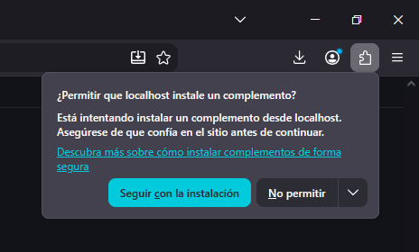
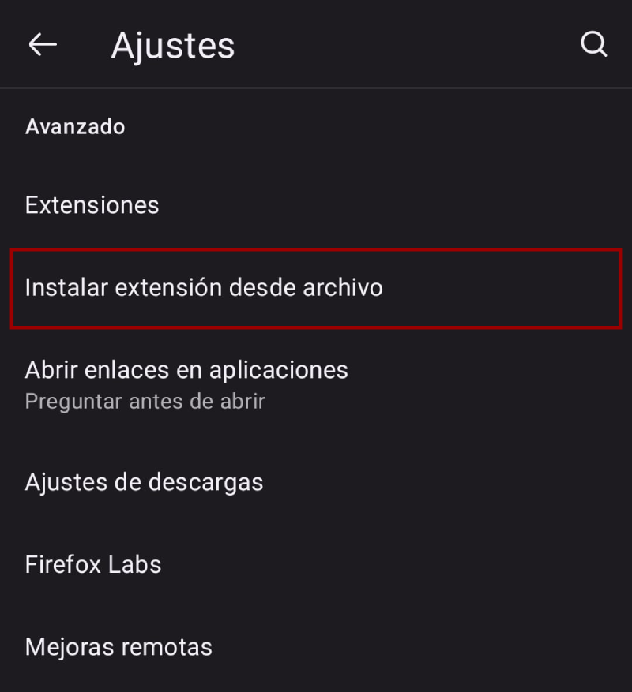

Desbloquear contenido exclusivo
Accedé a notas de suscriptores o socios y a las ediciones impresas en los medios que lo requieren.

Una extensión gratuita y de código abierto que mejora la experiencia de lectura en más de 50 portales de medios argentinos. Desbloquea notas exclusivas, elimina publicidades intrusivas y bloquea los diálogos de notificaciones. Todo configurable y activable de forma independiente.
Tres funciones independientes que activás o desactivás cuando quieras desde el menú de la extensión.
Accedé a notas de suscriptores o socios y a las ediciones impresas en los medios que lo requieren.
Bloquea anuncios y redes publicitarias en todos los medios soportados, incluidos los intersticiales y videos.
Elimina los banners y pop-ups que te piden permiso para enviarte notificaciones push.
Además, en algunos portales La Capital suma la visualización de las versiones impresas, La Nación permite ver resúmenes generados por IA y escuchar las notas, y la cobertura se extiende a los grupos editoriales completos de Clarín y Perfil.
Se van agregando nuevos medios y funcionalidades con el paso del tiempo.


La extensión también cubre estos sitios del Grupo Clarín, La Nación, la Editorial Perfil y El Litoral.
Elegí dónde la vas a usar y con qué navegador: abajo aparecen los pasos que te tocan a vos. No hace falta saber nada de programación y se hace una sola vez.
diarios-liberados-main. Acordate de dónde la dejaste, la vas a necesitar
en el paso 6.
chrome://extensions/ en la barra de direcciones de tu
navegador y apretá Enter.
Según el navegador que uses puede ser
edge://extensions/, brave://extensions/,
opera://extensions/ o vivaldi://extensions/.
diarios-liberados-main que extrajiste en el paso 2.
Fijate de seleccionar la carpeta que tiene los archivos
directamente adentro (la que contiene el manifest.json), no una carpeta
que contenga a otra carpeta.
¿Cómo actualizo a una versión nueva?
Descargá el ZIP otra vez, reemplazá el contenido de la carpeta anterior por el nuevo y
entrá en chrome://extensions/ para hacer clic en el
botón de recargar (↻) de la extensión. No hace falta desinstalarla ni volver a
configurarla.

about:addons, abriendo Diarios Liberados y marcando
“Permitir” en “Ejecutar en ventanas privadas”.
¿Cómo actualizo a una versión nueva? No tenés que hacer nada: la extensión se actualiza sola. Si alguna vez sumamos un medio nuevo y no te funciona, abrí el menú de la extensión: te va a ofrecer darle acceso a ese sitio con un botón.
Sólo funciona en Android, con Firefox. Ningún navegador basado en Chromium permite instalar extensiones en el celular. En iPhone y iPad tampoco se puede: Apple obliga a que todos los navegadores usen el motor de Safari y a que las extensiones se distribuyan dentro de una app aprobada por la App Store.

Para abrir el menú de la extensión tiene que haber un sitio abierto. Entrá por el menú ⋮ → Extensiones con un diario cargado en una pestaña normal. Desde la pantalla de inicio de Firefox no abre: es una limitación conocida de Firefox para Android, no de la extensión.
¿Cómo actualizo a una versión nueva? Repetí la instalación: descargá el archivo otra vez y volvé a instalarlo desde Ajustes. No perdés la configuración que tengas puesta.
Qué hace exactamente la extensión en cada uno de los portales soportados.
Este proyecto fue desarrollado exclusivamente con fines educativos, de investigación técnica y aprendizaje sobre manipulación del DOM, arquitectura de extensiones web e intervención del lado del cliente (client-side).
Sin fines de lucro: es totalmente gratuito, de código abierto y no persigue ningún beneficio económico, monetización ni comercialización directa o indirecta.
Sin redistribución de contenido: la extensión no almacena, aloja ni retransmite material protegido por derechos de autor. Todas las modificaciones se ejecutan de manera local en el navegador del usuario sobre la información que el propio sitio web ya envió al cliente.
Uso bajo propia responsabilidad: el software se provee «tal cual» (as-is), sin garantías de ningún tipo. Cada usuario es responsable del uso que le da a la herramienta y del cumplimiento de los términos y condiciones de los sitios web que visita.
Marcas y derechos: todos los nombres, logos y marcas registradas mencionadas pertenecen a sus respectivos dueños y se utilizan únicamente con fines identificatorios y descriptivos.